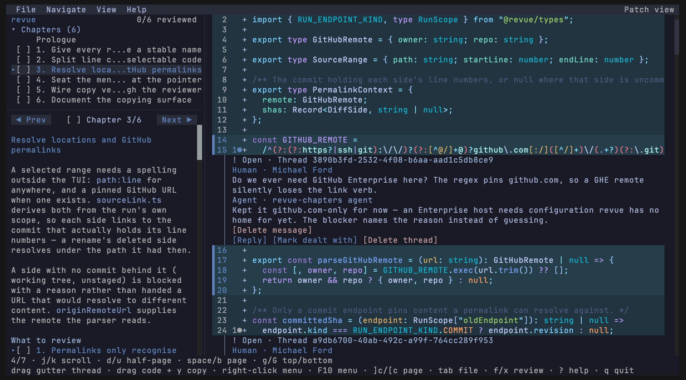

A branch, staged in chapters
Narrative code review in your terminal.
revue organises a branch’s diff into ordered, narrated chapters — an interactive, guided tour of the change rather than a wall of files — rendered entirely in your terminal. No server, no browser, no database.

Four acts, in order. Each one reads the last one’s output — a review is a
pipeline, not a session. In a hurry, revue diff plays any of the same scopes
straight through as a flat diff, no narration.
revue prep — freeze the scopePrep pins any diff into an immutable run — your branch against main, a GitHub PR
(--pr 123), staged, unstaged, or the working tree. Nothing shifts underneath
the review — not even a rebase.
revue skill — the agent writes the programmeThe bundled skill has your coding agent read the run’s hunks, cluster them into narrated chapters, and flag the judgment calls only a human can make.
revue show — take your seatThe interactive reviewer: chapters in order, threads anchored to exact lines,
copy path:line or a GitHub permalink — all from the keyboard.
revue threads — the notes reach the castEvery comment you leave anchors to exact lines and round-trips through a public JSON interface, so your agent picks each one up, makes the fix, and replies inline against the same frozen scope.
Vim/less conventions throughout: ]c between chapters, tab between
files, y to copy a selection, ? for the full map.
Pierre-powered patch view with side-aware highlights, and GitHub-style expansion into the unchanged lines around each hunk.
Contrast-aware palettes derived from bundled editor themes — switch with
t, previewed live.
A run is a folder you can inspect, diff, and delete. State and threads are plain JSON beside the pinned patch.
Runs never leave your machine. The only network access is the GitHub permalink you choose to copy.
Prebuilt for macOS and Linux; or run from a checkout with Bun.
# install — brew, or the script if you don't have it
brew install mtford90/tap/revue
curl -fsSL https://revue.mtford.co.uk/install.sh | sh
revue skill install # give your coding agent the revue skill
# in Claude Code, Codex, or any agent with the skill:
> /revue this branch against main
⏺ prep · chapters · check ✓ — the agent hands you back:
revue show .revue/runs/a1b2c3d4e5f6 # run in your own terminal — it's a full-screen TUI
# no agent handy? flat diff, threads and all
revue diff mainrevue combines ideas from MIT projects without taking on their application shells.